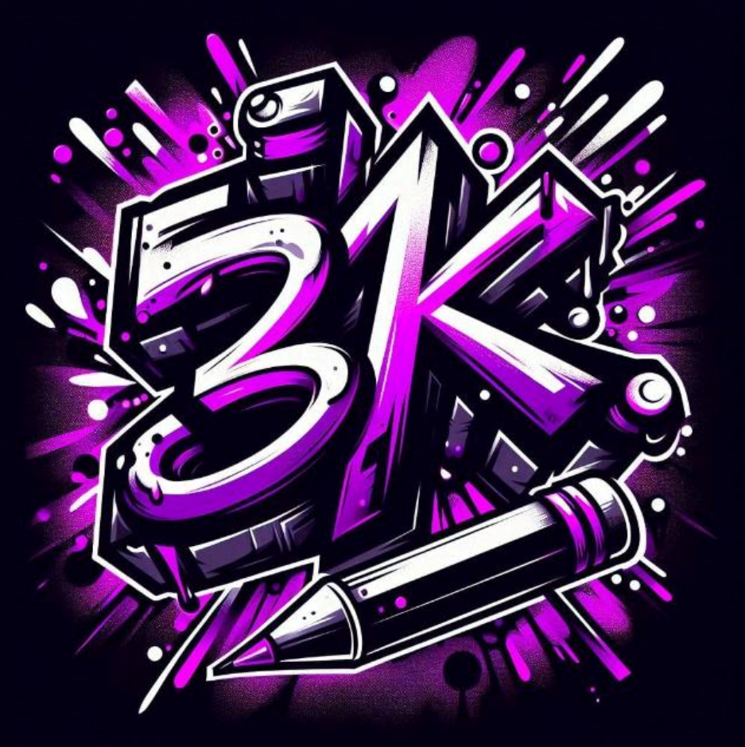

SITE DA 3K!

Este site, criado por Kesler e Daniel Osterkamp, tem o objetivo de mostrar um pouco da nossa turma,
mostrando diversos alunos individuais, duplas e grupos da turma, com um toque de humor e
utilizando
de piadas internas da turma e/ou dos grupos. Aproveite e esperamos que se divirta com as páginas
:)